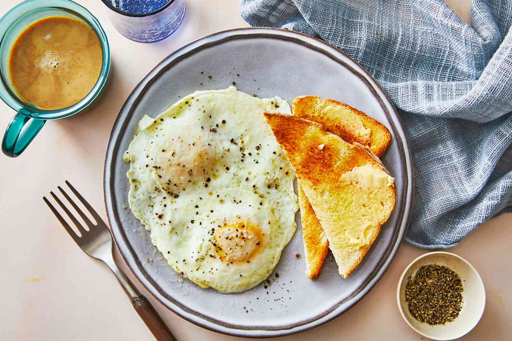

Over Easy Eggs
With their perfectly set whites and runny yolks, these over-easy eggs are begging for lots of buttered toast.
Prep Time
- Preparation: 3 minutes
- Cooking: 3 minutes
- Total: 6 minutes
Ingredients
- 2 eggs
- 1 tablespoon of unsalted butter
- Salt and pepper
Instructions
- Melt butter in pan over medium heat.
- Add two eggs, season with salt.
- Cook until whites are set.The whites should be opaque.
- Carefully flip the eggs, making sure that the spatula is centered under the yolk.
- Season with pepper and cook until whites are set, should be 30 more seconds.